Designing a Connected Nutrition Platform.
I rebuilt the NutriFlow mobile app, designed a new dashboard for nutritionists from scratch, and connected the two, so clients and practitioners can work on plans side by side.
Real client engagement, real shipped product. "NutriFlow" is a pseudonym, and a small number of identifying details have been generalized to respect client confidentiality. The screens, design decisions, and outcomes shown here are from the actual work.
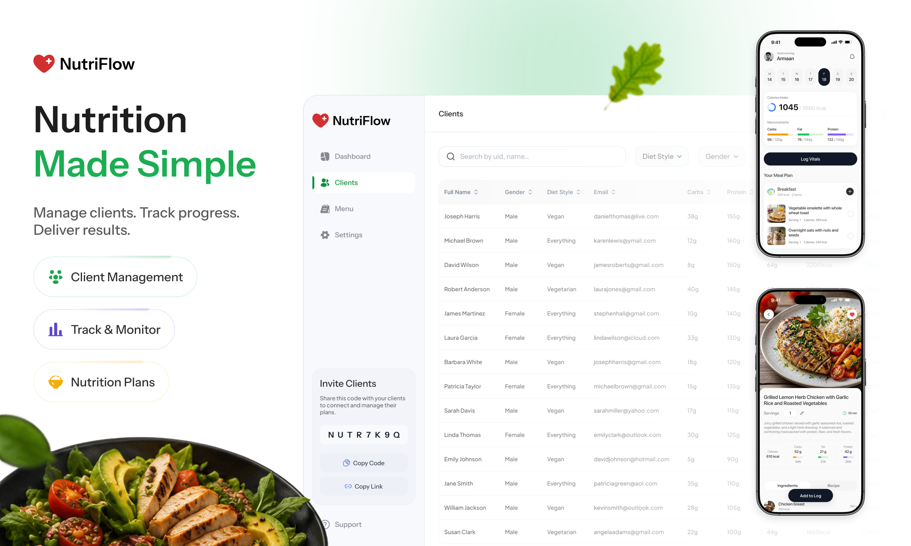
From a standalone app to a connected platform.
The product was a single mobile app. After signup, clients were handed a nutrition plan generated entirely by the app, with no human in the loop. The interface itself felt dated, and the day-to-day flows weren't enjoyable to use. The work turned that single app into a connected platform, with a redesigned client experience and a new dashboard built for nutritionists.
A standalone app
- Mobile-only product
- Outdated, hard-to-use UI
- App-generated plans only, no human option
- No nutritionist side
- No biometric or mood tracking
A connected platform
- Redesigned modern mobile app, iOS and Android
- New web dashboard for nutritionists, built from scratch
- Two plan paths: App-Guided or Nutritionist-Guided
- 8-character code links clients to a nutritionist
- Mood, ketone, glucose, macros, and 27 micronutrients
Putting automated planning, practitioner oversight, deeper nutrition data, and biometric tracking into one product gave the platform a more useful take on personalized nutrition than most apps in the space.
Not a visual redesign. A product transformation.
The brief wasn't a UI refresh. It was turning a single, hard-to-use app into a connected product that worked for two very different user groups, without overcomplicating either side.
-
01
The mobile app needed a real overhaul
Most of the primary flows weren't usable as they stood. They all had to be reshaped.
-
02
The dashboard didn't exist
Nutritionists had nothing on their side. A whole new product layer had to be designed from the ground up.
-
03
Two plan paths in one product
App-Guided plans and Nutritionist-Guided plans had to live in the same product, without leaving users unsure which path they were on.
-
04
Nutrition tracking needs trust
Macros, micronutrients, ketones, and glucose readings have to feel clear, accurate, and worth checking every day.
-
05
Simple logging, complex data
Logging had to stay quick, even as the data behind it got richer.
-
06
Real visibility for nutritionists
Practitioners needed live progress so they could actually adjust upcoming plans, not just look at numbers.
Two sides of one connected loop.
People following a nutrition plan
- Get a personalized plan, either App-Guided or Nutritionist-Guided
- Connect with a nutritionist using an 8-character code
- Log meals quickly with photo, barcode, or label scan
- Track mood, ketone, and glucose levels
- See macros plus 27 vitamins and minerals
- Understand the days and weeks ahead at a glance
The new nutritionist side
- Connect with clients using the 8-character code
- Monitor adherence and biometric signals
- Review meal logs and the nutrition breakdown
- Adjust upcoming days and weeks of the plan
- See progress without digging through raw data
- Manage multiple clients efficiently
Plans, logs, biometrics
Monitor, adjust upcoming plans
Updated plan, new actions
Three principles, one connected product.
-
01
Make nutrition tracking effortless
Three ways to log a meal: take a photo (processed with AI), scan a barcode, or scan the nutrition label. Different moments call for different methods.
-
02
Connect clients with professional support
Right after signup, the user picks App-Guided or works with a real nutritionist. An 8-character code links the two, and from then on, every meal the nutritionist assigns flows straight into the client's plan.
-
03
Make complex nutrition data understandable
Macros, 27 vitamins and minerals, mood, ketones, glucose. Summary up top, full detail only when someone actually wants to dig in.
From unusable to a daily nutrition companion.
The mobile app went from something users avoided to something that actually fits into their day. Clear next action, quick logging, and health signals that matter, in that order.
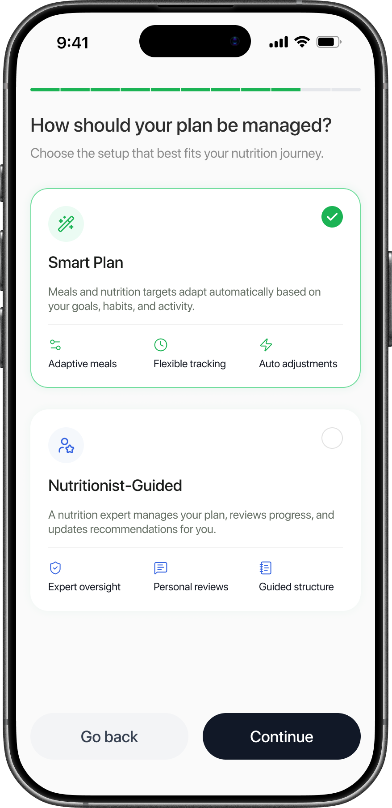
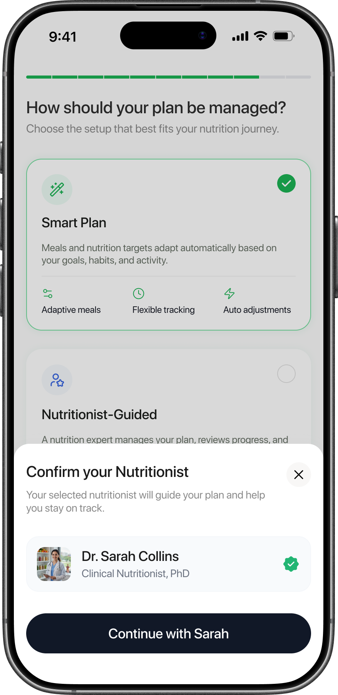
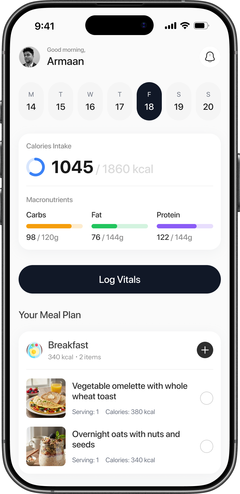
The plan structure works for both App-Guided and Nutritionist-Guided users, without splitting the product into two different apps.
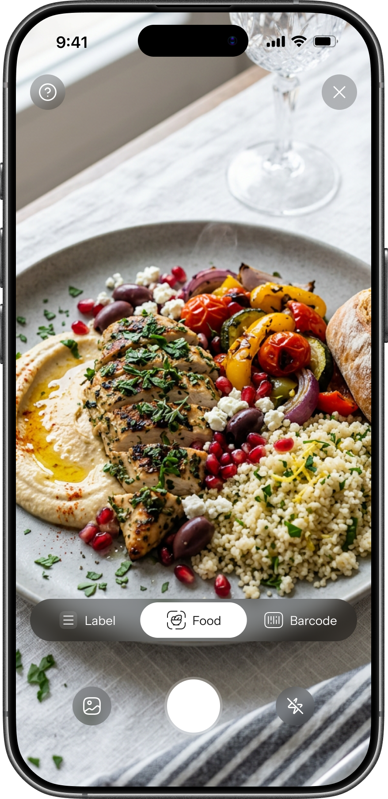
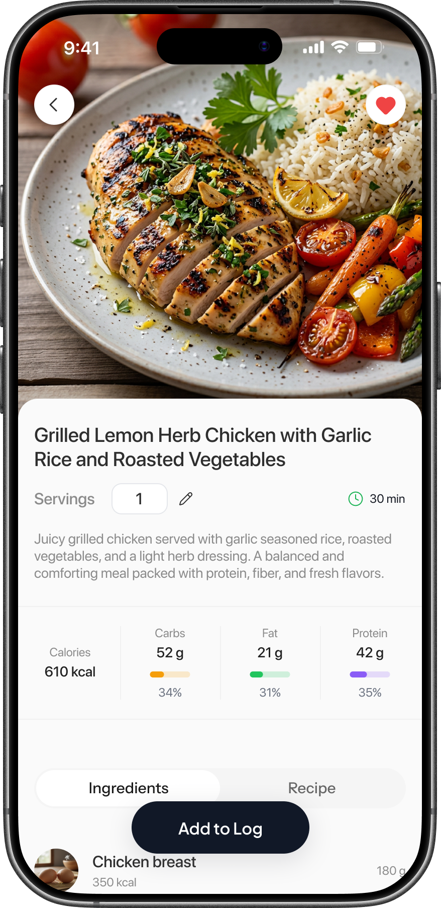
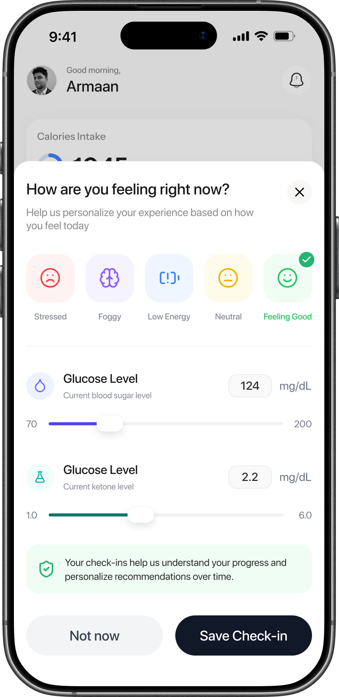
Summary first, detail on demand. The deeper nutrition data is there when someone wants to dig in, not before.
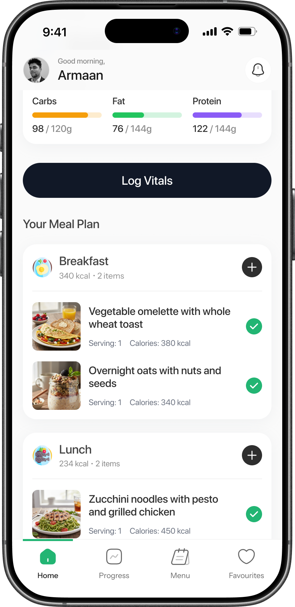
The loop runs both ways. The nutritionist's assigned meals flow into the client's plan; the client's logs and vitals flow back into the nutritionist's progress view.
The missing professional layer.
Designed from scratch. The dashboard is the place where nutritionists connect with clients, see how their week is actually going, and adjust upcoming plans based on what's working.
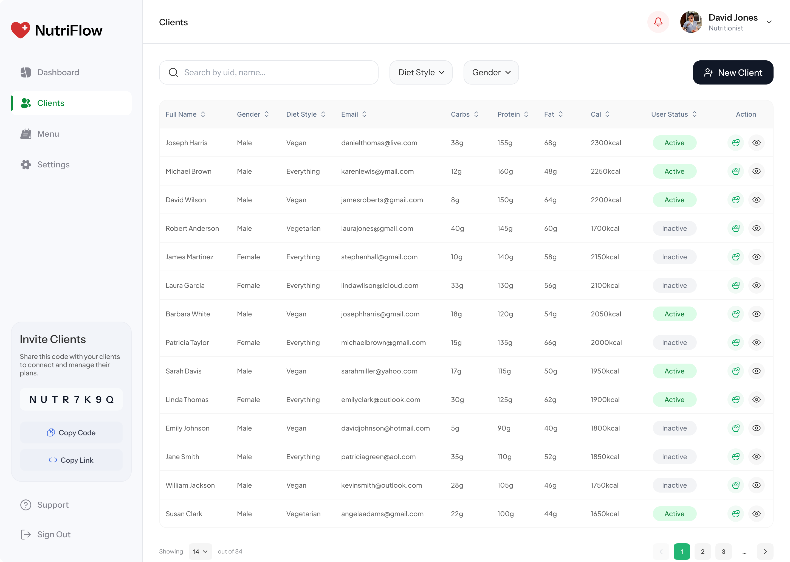
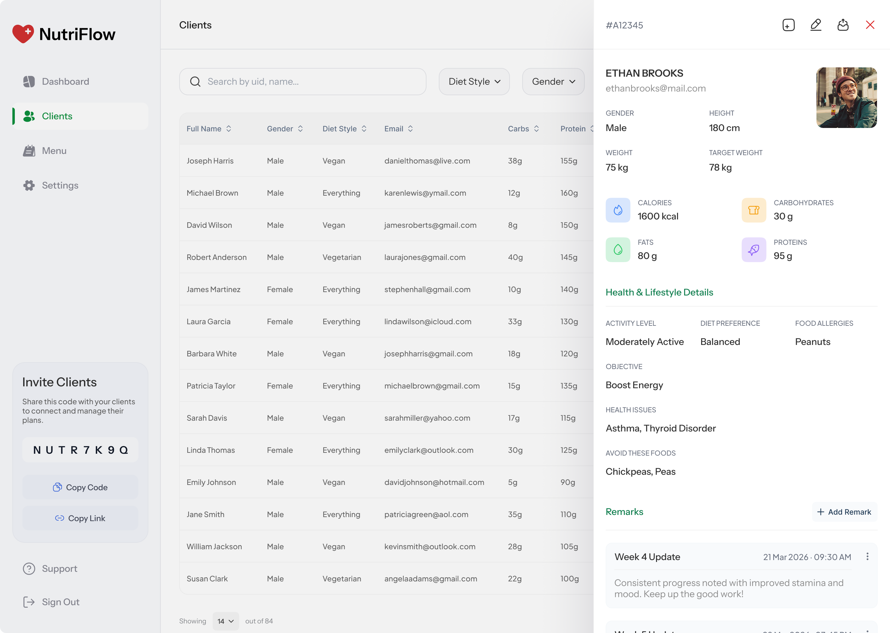
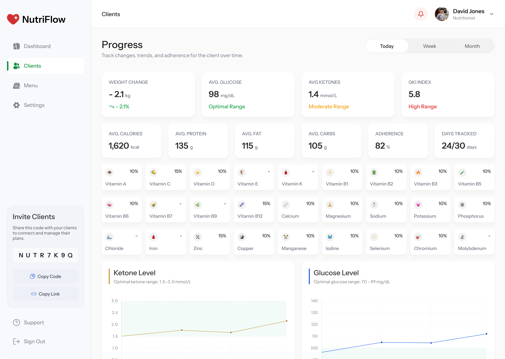
The progress view ties everything together: macros, biometrics, adherence, and the GKI index in one place.
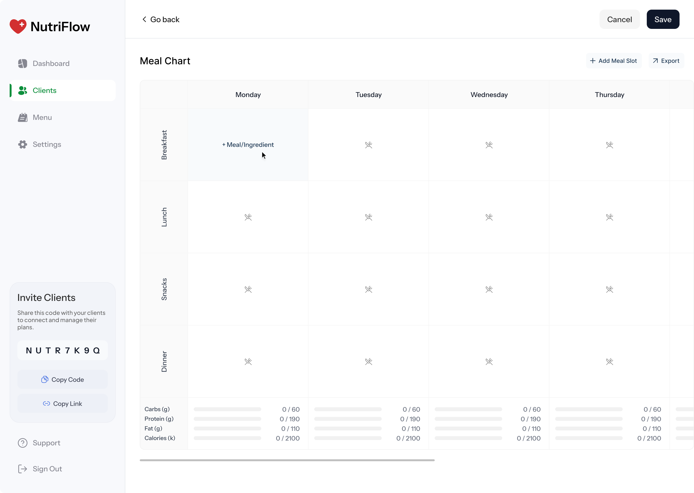
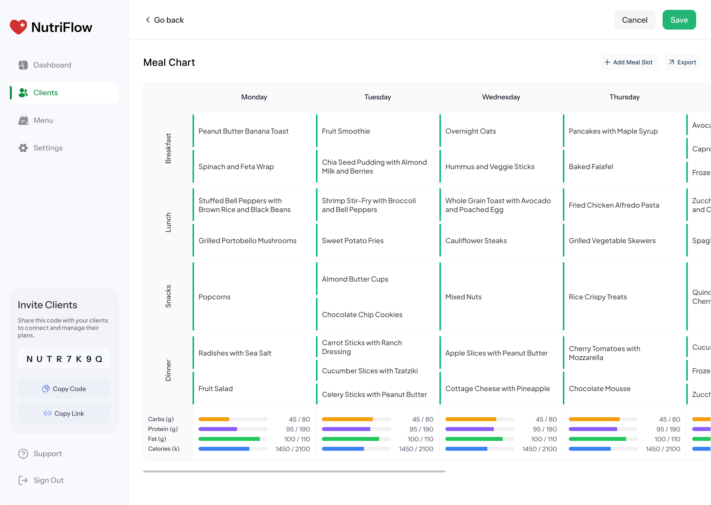
Save the chart, and every meal lands in the client's mobile plan instantly. No re-entry, no copy-paste, no waiting.
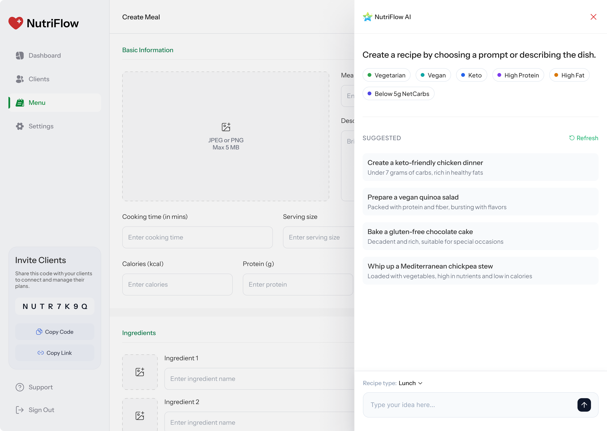
The product thinking behind the work.
-
01
Two plan paths after signup
App-Guided or Nutritionist-Guided, picked right at signup. The product became flexible for self-directed users and for users who want human accountability.
-
02
The 8-character connection code
A simple way to link a client app to a nutritionist's dashboard. No friction-heavy onboarding, just a code in and the connection is live.
-
03
Assigned meals sync to the mobile plan
The nutritionist's chart isn't a separate file. Every meal they assign lands in the client's mobile plan automatically, ready to be checked off. One source of truth, no manual re-entry on either side.
-
04
Three meal logging methods
Photo (processed with AI), barcode, and nutrition label scanning. Different users log differently, so there are three ways in.
-
05
Tracking beyond meals
Mood, ketone, and glucose logs give the nutritionist, and the user, more context than food logs alone.
-
06
Dashboard built around adjustment
Nutritionists needed to act, not just observe. Plan adjustment sits at the center of the dashboard, not tucked into a side menu.
The work, by the numbers.
A single, hard-to-use app became a connected platform where clients track real progress and nutritionists can act on it. These are the wins that mattered most.
A new nutritionist surface, built from scratch
The web dashboard didn't exist. Now it's the place where every plan starts, gets adjusted, and shows results.
Mobile meal logging, three ways in
AI food photo, barcode, and nutrition label scanning. Friction cut from the action clients repeat most.
Clients a nutritionist can actively manage
A single roster, live progress, and an editable meal chart replaced a workflow that ran across email, spreadsheets, and PDFs.
To build a full week of meals
The meal chart turned plan creation from a back-and-forth across documents into a single grid that syncs straight to the client's app.
Weekly app opens per client
Faster logging, a clearer next action, and the meal plan landing on home brought clients back to the app about twice as often after launch.
Tracked in one progress view
Mood, ketones, glucose, GKI Index, macros, and the full 27 micronutrients. Adherence and trend charts included.
A modern foundation, built to last.
The interface keeps a calm, health-focused tone. Reusable cards, charts, log components, plan modules, and metric widgets carry the same patterns across both surfaces. Motion is there for clarity, not decoration. The whole system is set up to evolve toward Apple's Liquid Glass direction on iOS 26 when the team is ready.
When product design changes the product.
What I take from this project: product design carries the most weight when it changes the product model, not just the surface. The app that existed was a closed loop. You signed up, the algorithm took over, and that was the whole experience. The work turned it into something a client can grow with, alone or alongside a nutritionist.
A redesigned mobile app, a new dashboard built from scratch, and a shared visual system. That combination gave the team something that holds up today, and has real room for what they want to build next.
Need help turning a complex product into a clear, scalable digital experience?
If your product feels dense or hard to move through, I can help reshape the experience without losing the depth that makes it useful.